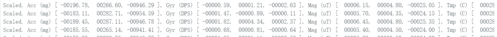
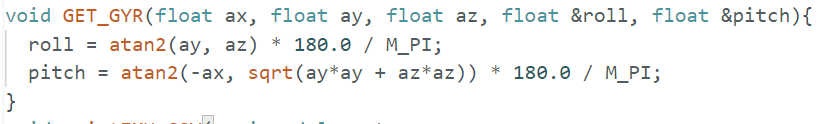
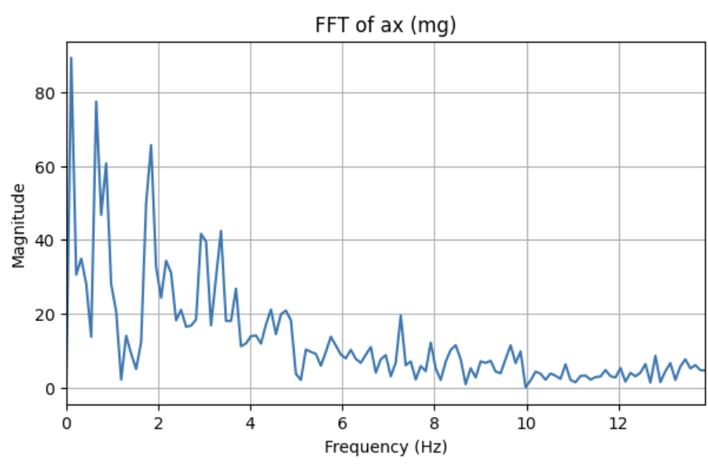
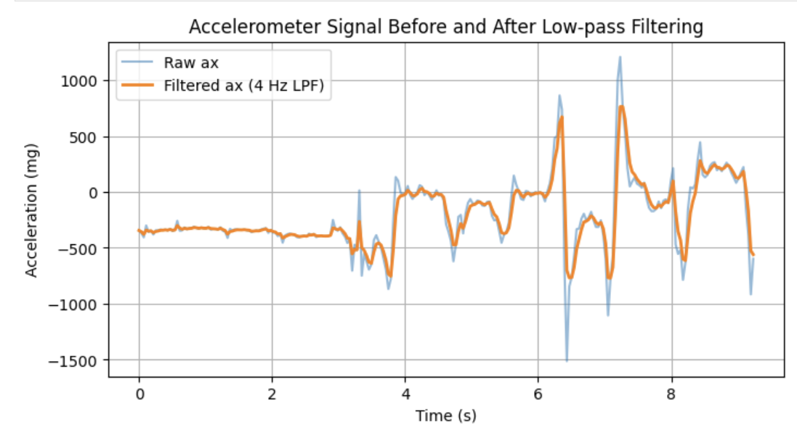

← Back to Home
Lab 2: IMU
Course: ECE 5160 Fast Robots (Spring 2026)
Student: Hetao Yin
Table of Contents
- Overview
- Lab Tasks
- Discussion
- 5000-level (Optional)
- References
1. Overview
In this lab, an inertial measurement unit (IMU) was integrated with the Artemis board to measure linear acceleration and angular velocity. The SparkFun ICM-20948 IMU was configured and used to collect accelerometer and gyroscope data for estimating the robot’s orientation.
Accelerometer and gyroscope measurements were analyzed in both time and frequency domains, and filtering techniques were applied to reduce noise and drift. A complementary filter was implemented to fuse both sensors, and IMU data were logged and transmitted over Bluetooth to record and analyze the motion of the robot during a driving experiment.
Hardware / Software
- Board: SparkFun RedBoard Artemis Nano
- IMU: SparkFun 9DOF ICM-20948 breakout (QWIIC)
- IDE: Arduino IDE
- Python: venv + JupyterLab (for plotting / FFT / data parsing)
- Robot platform: Force1 RC car + Li-Ion battery
3. Lab Tasks
Below follows the Lab 2 write-up sections. For each section: explain what you implemented/changed, show evidence (images/plots/videos),
and include minimal code snippets (not full code).
3.1 Set up the IMU
-
AD0_VAL:
AD0_VAL sets the least significant bit of the IMU’s I2C address.
In the provided Example1_Basics code, AD0_VAL is set to
1, which matches the hardware configuration of the SparkFun ICM-20948
breakout used in this lab and allows successful I2C communication.
-
Sensor behavior:
When the board is rotated or flipped, the accelerometer readings change according to the
direction of gravity, while the gyroscope reports angular velocity during rotation.
During linear acceleration, the accelerometer shows transient changes, whereas the
gyroscope remains near zero unless rotational motion is present.
Figure 1. Serial output from Example1_Basics while rotating, flipping,
and accelerating the IMU board.

3.2 Accelerometer
-
Pitch/Roll equations:
Real-time pitch and roll display
Pitch and roll computation code

- Noise analysis: [TODO: record data, FFT, discuss spectrum + choose cutoff frequency]
- Low-pass filter: [TODO: implement LPF and show raw vs filtered plot]
- Jupyter plotting: [TODO: time on x-axis, signal on y-axis]
Noise analysis and cutoff frequency:
The accelerometer signal shows significant low-frequency content, with most energy
concentrated below approximately 4–5 Hz, while higher frequencies are dominated by noise.
Based on the FFT, a low-pass filter cutoff of about 5 Hz was selected. This cutoff retains
motion-related information while suppressing high-frequency vibrational noise. Lower
cutoffs oversmooth the signal, whereas higher cutoffs allow excessive noise to pass.
Figure 3. Fourier Transform of accelerometer data.

Low-pass filtering:
A simple low-pass filter was applied to the accelerometer data to reduce high-frequency
noise. Compared to the raw signal, the filtered signal is significantly smoother while
preserving the overall motion trend.
Figure 4. Accelerometer signal before and after low-pass filtering.

3.3 Gyroscope
- Angle integration: [TODO: compute pitch/roll/yaw from gyro (sampling dt matters)]
- Comparison: [TODO: compare gyro angles vs accel angles vs filtered accel]
- Sampling frequency effects: [TODO: try different sampling rates, discuss drift/accuracy]
- Complementary filter: [TODO: fuse accel + gyro for stable pitch/roll]
- Demonstration: [TODO: show working range/accuracy, resilience to drift and vibrations]
Figure X. Gyro-derived pitch/roll/yaw at different orientations.
[TODO]
Figure X. Complementary filter output vs accel-only vs gyro-only.
[TODO]
// TODO: minimal Arduino snippet for gyro integration + complementary filter
3.4 Sample Data
- Speed up main loop: [TODO: no delays, avoid waiting on IMU-ready, reduce Serial prints]
- Sampling speed: [TODO: how fast you can sample + compare loop rate vs IMU update rate]
- Data logging design:
- [TODO: one big array vs multiple arrays (accel vs gyro) justification]
- [TODO: data type choice (int/float/double/string) justification]
- [TODO: memory budget on Artemis + seconds of data stored]
- Time-stamped arrays: [TODO: start/stop logging flags in loop]
- Bluetooth transfer: [TODO: demonstrate ≥ 5 seconds logged and sent to PC over BLE]
Figure X. Console output showing sampling rate / loop timing measurement.
[TODO]
Figure X. Example plot of logged IMU data (≥ 5 s) after BLE transfer.
[TODO]
// TODO: minimal Arduino snippet for (1) fast loop logging into arrays (2) start/stop flags (3) BLE send
# TODO: minimal Python snippet for receiving, parsing, and plotting transferred IMU arrays
3.5 Record a stunt!
- Battery mounting: [TODO: note correct polarity red-red / black-black]
- Baseline driving: [TODO: 5 min manual driving observations (speed/turning/accel)]
- Video evidence: [TODO: embed video(s) or link(s)]
- Discussion: [TODO: what you expected to see in IMU during stunt]
Video X. Manual driving / stunt recording.
[TODO: <video controls src="videos/lab2/your_video.mp4"></video> or a hosted link]
3.6 Pack up
- [TODO: batteries disconnected, shared batteries returned to chargers, AA returned to TAs]
4. Discussion
- Key takeaways: [TODO]
- Biggest issues & fixes: [TODO]
- Filter design choices: [TODO: cutoff frequency reasoning + complementary filter parameter]
- What you would improve next: [TODO]
5. 5000-level (Optional)
[TODO: If required. Otherwise: "No additional tasks for 5000-level students in this lab."]
6. References
- [TODO: SparkFun ICM-20948 library / datasheet / course handout link]
- [TODO: Any FFT tutorial used]
- [TODO: Any additional sources]
Hosted on GitHub Pages.